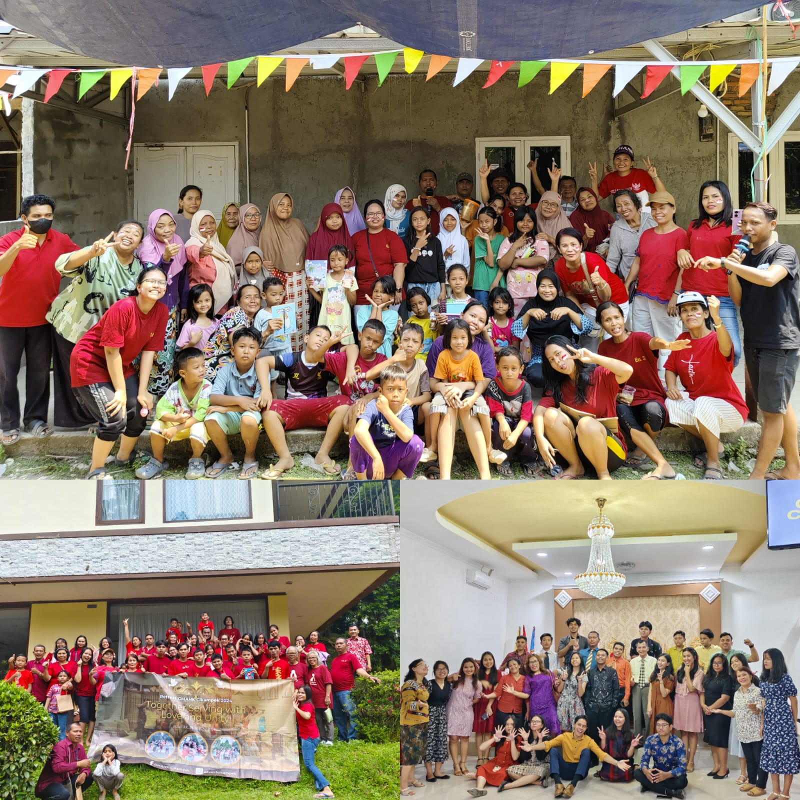

My Holiyeay!
My name is Rose Valencia Siahaan, with student ID 2382026. I am a student at Advent University Indonesia, Faculty of Information Technology, Department of Information Systems. For this Web Programming 1 assignment, I am asked to briefly describe my semester vacation experience. So, allow me to share my vacation experience titled: Liburan Jarang Keluar :)
My vacation was quite uneventful, filled with daily house chores such as sweeping the yard, washing clothes, ironing clothes, cleaning windows, washing dishes, sweeping the house, mopping the house, and watering my mother's beloved plants. Usually, my younger siblings would help, but since I was the only one not busy and had already spent a lot of my parents' money, I decided to do it myself, haha :).
Then, a month later (at the end of June), my church organized a church picnic in Puncak. Hooray! So, I and several other young people prepared for the church picnic. The big day arrived, and despite all the chaos, everything went smoothly and successfully (Thank you, Lord). After the church picnic, I returned to my routine with full awareness. But not every day was filled with work; on weekends, I would hang out with friends, church friends, and my boyfriend (yay!). However, after the church picnic, I found myself more occupied with numerous family events and guests at home (typical Batak), so I had to be more diligent in my tasks :).
Then came August, a month filled with nervousness as I had to ask my parents for money for tuition. But because my parents saw my dedication during the vacation, they were more than willing to provide it along with their advice for their daughter. In August, our church also held an Independence Day event, often referred to as "17an," with the local community. That was a brief overview of my vacation... I hope my next vacation will be even more exciting! Thank you.